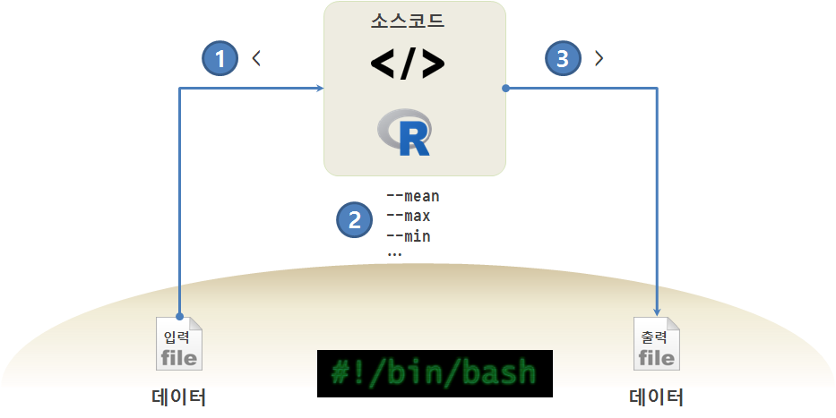

데이터 과학
.R 스크립트를 인자와 함께 실행
학습 목표
.R스크립트를 유닉스/리눅스상에서 유연하게 동작시킨다.- R 스크립트를 수정하지 않고, 인자를 바꿔 작업을 수행시킨다.
1. 인자를 갖는 R 스크립트

유닉스/GNU리눅스 환경에서 통계모형, 기계학습, 딥러닝 작업을 하게 되면 텍스트 형태 데이터, R스크립트, 출력 산출물을 갖게 되고, 입력 데이터를 출력산출물로 변환시키는데 R이 역할을 하게 된다.
R 스크립트를 유연하게 만들게 되면 데이터만 바꿔도 산출물을 생성해 내고, 경우에 따라 인자값을 달리하면 원하는 다른 결과를 얻게 된다.
2. 데이터를 달리하는 R 스크립트
SOME TIME SERIES DATA SETS에서 Per capita annual GDP for several countries during 1950-1983 (first row is 1950, last is 1983) 데이터를 사용한다. 데이터를 austria.csv, canada.csv, france.csv와 같이 구분하여 저장한다.
2.1. R 스크립트 시제품 제작
먼저 austria.csv 파일을 불러와서 평균을 계산하는 R스크립트를 작성한다.
# 데이터 불러오기
gdp.df <- read.csv("austria.csv", sep=",", head=FALSE)
# 평균계산
gdp.mean <- mean(gdp.df$V1)
# 계산결과 화면출력
cat("평균: ", gdp.mean, "\n", encoding="utf-8")Rscript r-args-ex01.R 실행결과 예상대로 평균 GDP가 계산되었다.
$ Rscript r-args-ex01.R
평균: 0.065532762.2. 입력파일을 달리한 R스크립트 실행
국가가 더 많을 수도 있지만, austria.csv, france.csv, canada.csv 3개 국가가 csv 파일로 데이터가 저장되어 있으니, 입력파일을 달리하여 평균을 계산하도록 R스크립트를 작성한다.
commandArgs 명령어를 통해 명령라인에서 인자를 받아 온다. 인자가 순서대로 들어오기 때문에 첫번째 인자로 들어오는 국가에 대한 GDP 평균을 구하고, 이를 화면에 출력하는 R스크립트다. strsplit 함수를 사용해서 파일명 앞쪽 – .csv 확장자 제거 – 만을 뽑아내어 국가명을 명기했다.
#!/usr/bin/env Rscript
args = commandArgs(trailingOnly=TRUE)
country <- args[1]
# 데이터 불러오기
gdp.df <- read.csv(country, sep=",", head=FALSE)
# 평균계산
gdp.mean <- mean(gdp.df$V1)
# 계산결과 화면출력
cat(strsplit(country, '\\.')[[1]][1], "평균: ", gdp.mean, "\n", encoding="utf-8")$ Rscript r-args-ex02.R austria.csv
austria 평균: 0.06553276
$ Rscript r-args-ex02.R france.csv
france 평균: 20.95751
$ Rscript r-args-ex02.R canada.csv
canada 평균: 5.8170882.3. 국가별 다양한 기본통계를 계산
국가 데이터를 바꾸는 것에 더해서 최소, 평균, 최대 GDP를 계산하는 로직을 추가한다. commandArgs 함수로 인자를 받는데, 최종 인자는 -1로 지정되기 때문에 그런 특성을 이용하여 R스크립트를 작성한다. 따라서, 첫번째 인자에 최소, 평균, 최소를 구할 것인지 정보를 받고, 마지막 인자로 파일명을 받는다.
#!/usr/bin/env Rscript
args = commandArgs(trailingOnly=TRUE)
action = args[1]
country <- args[-1]
# 데이터 불러오기
gdp.df <- read.csv(country, sep=",", head=FALSE)
# 기초 통계량 계산
if(action == "--min") {
gdp.min <- min(gdp.df$V1)
cat(strsplit(country, '\\.')[[1]][1], "최소: ", gdp.min, "\n", encoding="utf-8")
}else if(action == "--mean") {
gdp.mean <- mean(gdp.df$V1)
cat(strsplit(country, '\\.')[[1]][1], "평균: ", gdp.mean, "\n", encoding="utf-8")
}else if (action=="--max"){
gdp.max <- max(gdp.df$V1)
cat(strsplit(country, '\\.')[[1]][1], "최대: ", gdp.max, "\n", encoding="utf-8")
}Rscript r-args-ex03.R --min canada.csv 명령라인을 살펴보면, r-args-ex03.R R 스크립트를 실행하고, --min 인자로 최소값을 계산하는데, canada.csv 데이터 파일을 이용한다.
$ Rscript r-args-ex03.R --min canada.csv
canada 최소: 3.651109
$ Rscript r-args-ex03.R --max canada.csv
canada 최대: 8.382785
$ Rscript r-args-ex03.R --mean canada.csv
canada 평균: 5.817088